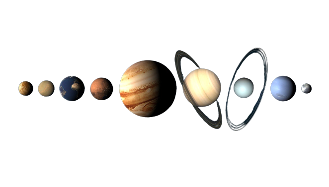

Naš solarni sistem
MERKUR
Merkur: Merkur je najbliža planeta Suncu i ima najveći temperaturni raspon od svih planeta u Sunčevom sistemu. Tokom dana, temperatura na Merkuru može dosegnuti oko 430°C, dok noću padne na -180°C.
Merkur je najmanja planeta u Sunčevom sistemu i nema atmosferu. Njegova površina je prekrivena kraterima sličnim onima na Mjesecu. Merkur ima veoma sporu rotaciju; jedan Merkurov dan traje 59 Zemljinih dana.
Merkur, planeta najbliža suncu, samo je nešto veća od Zemljinog meseca i ispresecana je kraterima.Planeta je vidljiva golim okom i kao takva je odavno poznata ljudima. Prema Universe Todai, Sumerani su pominjali planetu još u 2. milenijumu pre nove ere (period koji se proteže od 2000. pre nove ere do 1001. pre nove ere), a Vavilonci su je nazvali planetom Nabu. Znamo ga po imenu koje su dali Rimljani, po njihovom brzonogom bogu glasniku Merkuriju. Planetu su prvi put posmatrali preko novoizmišljenog teleskopa 1631. godine od strane astronoma Galilea Galileia i Thomasa Harriota, prema NASA Science.Od svoje prve posete NASA-ine letelice Mariner 10 1974. godine, mala planeta je zaintrigirala naučnike. Bez sumnje će nas i dalje iznenađivati, posebno nakon što zajednička misija Evropske svemirske agencije (ESA) i Japanske agencije za istraživanje svemira (JAKSA) BepiColombo stigne na malu planetu krajem 2025.
Iako je Merkur najbliža planeta Suncu, njegova površina i dalje može biti izuzetno hladna, zahvaljujući nedostatku atmosfere koja zadržava toplotu. Temperatura tokom dana može da dostigne 800 stepeni Farenhajta (430 stepeni Celzijusa), ali noću temperature mogu pasti i do minus 290 F (minus 180 stepeni), prema NASA-i. Ta fluktuacija je jednaka temperaturnom kolebanju od oko 1100 F (600 C), najvećem od bilo koje planete u Sunčevom sistemu.
Merkur se kreće oko Sunca svakih 88 zemaljskih dana, jureći brzinom od skoro 47 kilometara u sekundi - brže od bilo koje druge planete u Sunčevom sistemu, prema NASA-i. Merkurova orbita nije samo veoma brza već i veoma eliptična. Planeta se približava Suncu čak 47 miliona km i čak 70 miliona km od Sunca. Merkur ima najtanju atmosferu od bilo koje planete u Sunčevom sistemu. Atmosfera je toliko tanka da naučnici imaju drugo ime za nju - egzosfera. Merkurova egzosfera se sastoji uglavnom od kiseonika, natrijuma, vodonika, helijuma i kalijuma, navodi NASA.
VENERA
Zanimljive činjenice o Veneri:
Dan na Veneri je duži od godine Veneri je potrebno duže da se jednom okrene oko svoje ose nego da završi jednu orbitu oko Sunca. To je 243 zemaljska dana da se jednom rotiraju najduža rotacija bilo koje planete u Sunčevom sistemu i samo 224,7 zemaljskih dana da se završi orbita oko Sunca. Venera je toplija od Merkura uprkos tome što je dalje od Sunca Njegova srednja temperatura je 462°C. To je zbog visoke koncentracije ugljen-dioksida u Venerinoj atmosferi, koja radi na stvaranju intenzivnog efekta staklene bašte. Toplota je zarobljena u atmosferi poput ćebeta, što dovodi do toga da temperatura planete bude mnogo viša nego što bi sugerisala njena blizina Suncu.
Za razliku od drugih planeta u našem Sunčevom sistemu, Venera se okreće u smeru kazaljke na satu oko svoje ose Sve ostale planete se okreću suprotno smeru kazaljke na satu oko svoje ose i kruže oko Sunca u smeru suprotnom od kazaljke na satu. Venera takođe kruži oko Sunca u smeru suprotnom od kazaljke na satu, ali njena neuobičajena rotacija ose je zbog toga što je okrenuta naopačke ranije u svojoj istoriji bila je izbačena iz svog uspravnog položaja! Venera je drugi najsjajniji prirodni objekat na noćnom nebu posle Meseca Oblaci sumporne kiseline u atmosferi Venere čine je reflektujućom i sjajnom, zaklanjajući nam pogled na njenu površinu. Njegova svetlost čini ga vidljivim čak i tokom dana - ako je vedro i znate gde da tražite.
Venera ima 90 puta veći atmosferski pritisak od Zemljinog To je otprilike isto kao i pritisak koji se nalazi na dubini od 1 km u Zemljinim okeanima.Smatra se da je Venera dobila ime po prelepoj rimskoj boginji (pandan grčkoj Afroditi) zbog svog sjajnog, sjajnog izgleda na nebu. Od pet planeta poznatih drevnim astronomima, bila bi najsjajnija.
Pošto je Veneru lako uočiti golim okom, nemoguće je reći ko je otkrio planetu. Ali tokom vekova bili smo u mogućnosti da izmerimo kretanje Venere, uključujući retki tranzit Venere, kada izgleda da planeta prelazi ispred Sunca. Prateći pravila latinskog, trebalo bi da kažemo „venerean“ kao pridev da opišemo stvari vezane za Veneru. Međutim, smatra se da je ovo suviše blisko reči „venerički“. Češće korišćena reč je „Venerina“ uprkos njenoj nezgrapnoj etimologiji.

ZEMLJA
Zemlja je jedina poznata planeta koja podržava atmosferu sa slobodnim kiseonikom, vodom i najlepšim i vitalnim fenomenom koji je život. Planeta Zemlja je sfernog oblika, sa prosečnim radijusom od 6371 km.Prerežite ga na pola i lako ćete koristiti 3-D geometriju, paralelne geografske širine i dužinu luka da biste izračunali rastojanje između 2 zemlje na sferi. Zanimljivo je kako matematika povezuje sve što znamo o planeti i pomaže nam da se upoznamo sa raznim konceptima u geonaukama, nauci o životnoj sredini, ekologiji i još mnogo toga. Da nije matematike, i dalje bismo bili pod utiskom da ostajemo na jednoj od retkih planeta koje kruže oko zvezde u pozadini naizgled nepokretnih svetala.
Ističući značaj matematike iza naše veličanstvene planete povodom Dana planete Zemlje i Meseca svesti o matematici i statistici, MANAN KHURMA, osnivač i predsednik Cuemath-a (program za učenje matematike na mreži), navodi sedam zanimljivih matematičkih činjenica o Zemlji.
To je lopta sa masom i bez težine Zemljina masa je približno 5,97 × 1024 kg. Ili 6 sekstiliona tona. Pošto slobodno lebdi u svemiru, smatra se da ima samo masu i da nema težinu. Sastoji se uglavnom od gvožđa (32,1%), kiseonika (30,1%), silicijuma (15,1%), magnezijuma (13,9%), sumpora (2,9%), nikla (1,8%), kalcijuma (1,5%) i aluminijuma ( 1,4%), dok preostalih 1,2% čine količine drugih elemenata u tragovima. Plava planeta: 70% Zemljine površine je prekriveno vodom, a okeani drže oko 96,5% sve Zemljine vode. Zbog toga je planeta dobila nadimak „plava planeta“. Preostalih 30% planete čini čvrsta kora koja se nalazi iznad nivoa mora i naziva se „kontinentalna kora“.
Živimo u kući staroj 4.543 milijarde godina.Čišćenjem najstarijih stena za koje je utvrđeno da su stare 4,03 milijarde godina i prikupljanjem meteorita koji su se srušili na planetu, starost Zemlje je data između 4,4 i 4,5 milijardi godina. Tokom ovog vremena, videli smo da dinosaurusi postoje i da su izumrli nakon što su živeli na Zemlji oko 165 miliona godina. Dinosaurusi su postojali na ovoj planeti toliko dugo da su postojali fosili dinosaurusa iz prethodnih epoha, dok su drugi dinosaurusi iz budućih epoha još bili živi!Zemlja se kreće 34,8 puta brže od prosečnog konja Zemlja se kreće kroz Sunčev sistem brzinom od 1.669,8 km/h, dobijenom deljenjem Zemljinog ekvatorijalnog obima sa 24 sata.
Zemljina rotacija oko svoje ose ne traje 24 sata Da, potrebno je otprilike 23 sata, 56 minuta i 4 sekunde. Ova rotacija je u odnosu na udaljene „fiksne“ zvezde i naziva se „siderični dan“. Ali pošto postojanje Sunca ima veći uticaj na život na Zemlji, mi koristimo ovu najbližu zvezdu - solarnu udaljenost i na tome se zasnivaju naši kalendari i satovi. Pored toga, Zemlji je potrebno oko 365,25 dana da kruži oko Sunca, što se obično zaokružuje na 365 dana u kalendarskoj godini. Da bi se nadoknadio delimični dan koji nedostaje, jedan dan se dodaje u kalendar svake četiri godine, što ga čini prestupnom.
Kosmos i račun:Dok je razmišljao o kretanju Halejeve komete, ser Isak Njutn je shvatio da matematika koja se koristi za opisivanje fizičkog kretanja masivnih tela neće biti dovoljna da bi se razumela prostranstva univerzuma i kosmosa. Njutn je nastavio sa razvojem Računa kako bi tačno objasnio kretanje Halejeve komete, dok je takođe objašnjavao matematički model svih drugih nebeskih tela koja su se kretala po nebu.Priroda na Zemlji i Fibonačijevi nizovi: Spiralni oblici suncokreta, šišarki, ananasa i drugih šara u prirodi prate Fibonačijev niz koji počinje brojevima 1 i 1, a zatim se svaki sledeći broj dobija sabiranjem prethodna dva broja.